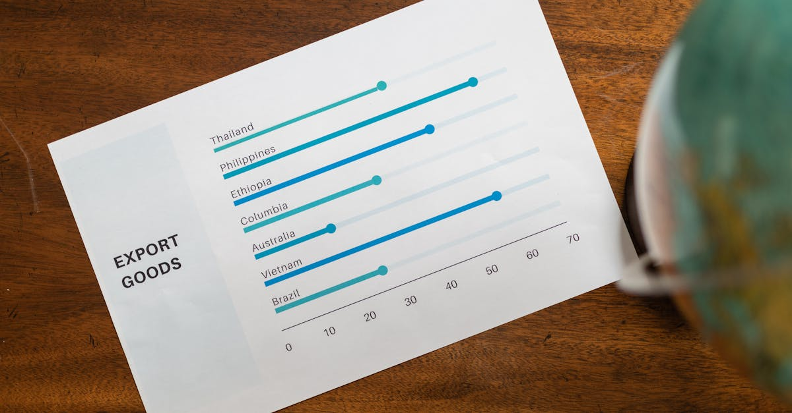

Bangladesh et FMI : Un Dialogue Crucial pour l'Avenir Économique
L'actualité économique mondiale est un ballet incessant d'événements, parfois lointains, mais dont les répercussions peuvent se faire sentir jusque dans nos portefeuilles d'investissement. Récemment, l'attention s'est portée sur le Bangladesh, un pays en développement dynamique, engagé dans des pourparlers fondamentaux avec le Fonds Monétaire International (FMI). Le ministre des Finances, Amir Khosru Mahmud Chowdhury, a rencontré des responsables du FMI à Washington pour discuter des réformes essentielles liées au solde d'un prêt de 5,5 milliards de dollars. Ce n'est pas qu'une simple transaction financière ; c'est un signal fort envoyé aux marchés mondiaux, une jauge de la santé économique d'une nation et, par extension, un indicateur potentiel pour les investisseurs avisés.
👉 À lire : Lufthansa: 100 ans de défis, l'IA éclaire l'investissement
Pourquoi un pays en pleine croissance comme le Bangladesh se tourne-t-il vers le FMI ? Souvent, c'est pour stabiliser son économie face à des chocs externes ou des déséquilibres internes, comme une inflation galopante, un déficit budgétaire persistant ou une balance des paiements déficitaire. Le FMI, en tant que prêteur de dernier recours, offre un soutien financier vital, mais pas sans conditions. Ces conditions, ou réformes structurelles, visent à corriger les faiblesses sous-jacentes et à restaurer la confiance des investisseurs. Pour l'épargnant intelligent et l'investisseur automatisé, comprendre ces dynamiques est primordial. Les décisions prises à Washington ou à Dacca peuvent influencer les flux de capitaux, la valorisation des actifs et, in fine, la performance de vos placements.
👉 À lire : Carburant Australie: Le plein est fait, la sérénité revient
L'ère de l'information nous a appris que l'interconnexion est la norme. Ce qui se passe dans un pays, même lointain, peut avoir des effets d'entraînement sur les marchés mondiaux. La capacité d'un pays à honorer ses engagements et à maintenir une trajectoire de croissance stable est un facteur clé pour les investisseurs qui cherchent à diversifier leurs actifs dans les marchés émergents. Les discussions entre le Bangladesh et le FMI ne sont donc pas un simple fait divers économique, mais un épisode d'une série bien plus vaste sur la gouvernance économique mondiale et la gestion des risques. Pour ceux qui s'appuient sur des outils d'investissement basés sur l'IA, ces informations sont des données précieuses, intégrées dans des algorithmes sophistiqués pour anticiper les mouvements du marché et ajuster les stratégies d'investissement en temps réel. L'objectif est clair : transformer la complexité en opportunité.

Les Exigences du FMI : Pilier de Stabilité ou Contrainte Douloureuse ?
Lorsque le FMI intervient, il ne se contente pas de distribuer des fonds. Il impose un programme de réformes strictes, souvent perçues comme une « pilule amère » par les populations et les gouvernements. Ces conditions sont conçues pour garantir que le pays emprunteur retrouve une trajectoire économique saine et soit en mesure de rembourser sa dette. Pour le Bangladesh, les discussions avec le FMI portent sur des réformes clés, touchant probablement à des domaines tels que la politique budgétaire, la politique monétaire, la gouvernance et la transparence. Imaginez que votre banquier vous prête de l'argent pour un projet, mais vous demande en retour d'établir un budget rigoureux et de lui fournir des rapports financiers réguliers. C'est, à une échelle nationale, la nature des exigences du FMI.
Les réformes budgétaires peuvent inclure la réduction des subventions énergétiques, l'amélioration de la collecte des impôts ou la rationalisation des dépenses publiques. Du côté monétaire, le FMI pourrait préconiser une politique visant à maîtriser l'inflation, par exemple en ajustant les taux d'intérêt ou en gérant la masse monétaire. Quant à la gouvernance, les exigences peuvent concerner la lutte contre la corruption, le renforcement de l'État de droit et l'amélioration de la transparence des institutions. « Les conditions du FMI sont souvent un mal nécessaire », observe Sarah Leclerc, économiste spécialiste des marchés émergents. « Elles peuvent être impopulaires à court terme, mais elles sont cruciales pour bâtir une base économique solide et restaurer la confiance des investisseurs internationaux. C'est le prix à payer pour la crédibilité sur la scène mondiale. »
Ces réformes, bien que potentiellement douloureuses pour certains secteurs de la société, sont censées créer un environnement plus stable et prévisible pour les entreprises et les investisseurs. Un pays avec des finances publiques saines, une inflation sous contrôle et une gouvernance transparente est intrinsèquement plus attrayant pour les capitaux étrangers. Pour l'investisseur qui utilise des plateformes d'épargne intelligente, l'analyse de ces réformes est un élément clé. Les algorithmes d'IA peuvent évaluer la faisabilité et l'impact potentiel de ces changements, en les comparant à des scénarios historiques dans d'autres pays. Ils peuvent ainsi détecter si le risque politique et économique diminue ou augmente, ajustant en conséquence l'exposition aux actifs liés à cette région. C'est une surveillance constante qui permet de naviguer au mieux dans les eaux parfois troubles des marchés émergents.
Réformes Économiques au Bangladesh : Impacts et Opportunités
Les réformes discutées entre le Bangladesh et le FMI ne sont pas de simples ajustements techniques ; elles sont le moteur de transformations profondes qui impacteront la vie quotidienne des citoyens et le paysage économique du pays pour les années à venir. Si le Bangladesh s'engage fermement dans ces réformes, on peut s'attendre à plusieurs évolutions. Premièrement, une amélioration de la discipline budgétaire devrait réduire le déficit public, ce qui peut libérer des ressources pour des investissements productifs et réduire la dépendance à l'endettement extérieur. Deuxièmement, une politique monétaire plus rigoureuse pourrait aider à maîtriser l'inflation, protégeant ainsi le pouvoir d'achat des ménages et stabilisant le coût des affaires pour les entreprises.
Cependant, le chemin n'est pas sans embûches. La réduction des subventions, par exemple, peut entraîner une augmentation des prix de l'énergie ou des denrées alimentaires, générant des tensions sociales. L'amélioration de la collecte des impôts, bien que nécessaire, peut également être impopulaire. C'est un équilibre délicat entre la nécessité économique et la faisabilité politique. Mais pour les investisseurs, ces réformes sont souvent un signe positif à moyen et long terme. Elles indiquent une volonté du gouvernement de s'attaquer aux problèmes structurels, ce qui, si réussi, peut déboucher sur une croissance plus robuste et durable. Un Bangladesh plus stable et plus transparent devient alors une destination plus attractive pour les investissements directs étrangers et les investissements de portefeuille.
« Les réformes du FMI sont un test de résilience pour tout pays. Réussir, c'est envoyer un message clair aux marchés : nous sommes sérieux quant à notre avenir économique et nous sommes prêts à faire le travail nécessaire pour y parvenir », explique un analyste financier basé à Singapour, spécialisé sur l'Asie du Sud.
Pour l'épargnant qui utilise un Agent IA pour optimiser ses placements, ces évolutions sont des signaux critiques. Un système d'IA peut analyser la progression des réformes, l'humeur des marchés financiers locaux et internationaux, et les données macroéconomiques pour évaluer la santé de l'économie bangladaise. Il peut ainsi identifier des secteurs d'opportunité, comme les infrastructures, la technologie ou l'énergie renouvelable, qui pourraient bénéficier d'un environnement économique amélioré. Inversement, il peut signaler des risques accrus si les réformes stagnent ou si des tensions sociales émergent, permettant ainsi des ajustements proactifs de votre portefeuille. L'objectif est de ne jamais être pris au dépourvu, mais plutôt d'anticiper les vagues pour surfer sur les bonnes et éviter les mauvaises.
Marchés Émergents : Le Fil Tendu entre Risque et Récompense
L'affaire du Bangladesh et du FMI est emblématique des dynamiques complexes à l'œuvre dans les marchés émergents. Ces économies, souvent caractérisées par une croissance rapide, une démographie jeune et un potentiel de développement immense, sont également sujettes à une volatilité plus élevée que les marchés développés. Elles représentent un fil tendu entre un risque potentiellement élevé et des récompenses tout aussi importantes. Les investisseurs sont attirés par les rendements supérieurs que ces marchés peuvent offrir, mais ils doivent aussi naviguer dans un labyrinthe de facteurs macroéconomiques, politiques et sociaux qui peuvent changer rapidement la donne.
Les marchés émergents sont comme un océan : ils peuvent être calmes et propices à la navigation un jour, et déchaînés le lendemain. Des facteurs tels que les fluctuations des prix des matières premières, les décisions de politique monétaire des grandes banques centrales (comme la Réserve fédérale américaine), les tensions géopolitiques ou les changements politiques internes peuvent avoir un impact considérable. L'exemple du Bangladesh, cherchant à rassurer les investisseurs et à stabiliser son économie via le FMI, illustre parfaitement cette réalité. Une économie qui parvient à mettre en œuvre des réformes difficiles et à démontrer sa résilience peut rapidement gagner en crédibilité et attirer des capitaux, tandis qu'une instabilité persistante peut entraîner une fuite des investissements.
Pour l'investisseur moderne, l'exposition aux marchés émergents est souvent une composante essentielle d'un portefeuille diversifié. Cependant, la sélection et le timing sont cruciaux. Comment identifier les « bons » marchés émergents et les « bons » moments pour investir ? C'est là que la puissance de l'analyse et de l'automatisation entre en jeu. Les outils d'investissement basés sur l'intelligence artificielle excellent à traiter des volumes massifs de données provenant de sources diverses – rapports du FMI, indicateurs économiques, actualités politiques, sentiment de marché – pour identifier des tendances et des opportunités que l'œil humain pourrait manquer. Ils peuvent détecter des corrélations subtiles entre des événements apparemment sans rapport et fournir des insights précieux.
- Analyse de données en temps réel : L'IA peut surveiller en permanence les marchés émergents pour identifier les signaux faibles.
- Évaluation des risques : Elle quantifie les risques politiques, économiques et de change pour chaque marché.
- Optimisation du portefeuille : Les algorithmes ajustent l'allocation d'actifs pour maximiser les rendements tout en gérant le niveau de risque souhaité.
Cette approche permet non seulement de capitaliser sur le potentiel de croissance des marchés émergents, mais aussi de se protéger contre leur volatilité inhérente, transformant ce fil tendu en une corde solide pour votre épargne.
L'Investisseur Face aux Turbulences Mondiales : Stratégies et Réactivité
Dans un monde où l'information circule à la vitesse de la lumière et où les marchés sont interconnectés comme jamais, l'investisseur est constamment confronté à des turbulences. L'histoire du Bangladesh et du FMI n'est qu'un exemple parmi d'autres de la complexité du paysage économique mondial. Comment un épargnant ou un investisseur peut-il naviguer efficacement dans ces eaux souvent agitées ? La clé réside dans une combinaison de stratégies robustes et d'une réactivité accrue. La première étape est de comprendre que les événements macroéconomiques, même ceux qui semblent lointains, peuvent avoir un impact direct ou indirect sur vos placements.
Une stratégie d'investissement réussie dans ce contexte implique plusieurs piliers :
- Diversification intelligente : Ne pas mettre tous ses œufs dans le même panier, mais aussi diversifier au-delà des classes d'actifs traditionnelles, en incluant des expositions géographiques et sectorielles variées.
- Veille macroéconomique : Rester informé des grandes tendances économiques mondiales, des politiques des banques centrales et des développements géopolitiques.
- Flexibilité et adaptabilité : Être prêt à ajuster ses positions en fonction des nouvelles informations et des changements de conditions de marché.
C'est précisément là que les technologies d'investissement intelligentes prennent tout leur sens. « Dans une ère où l'information voyage à la vitesse de la lumière, les décisions lentes sont coûteuses, » affirme Marc Dubois, un stratège en investissement parisien. « Les investisseurs qui s'appuient sur des outils capables de traiter et d'analyser des flux de données en temps réel ont un avantage décisif. » Un Agent IA, par exemple, ne se contente pas de suivre l'actualité ; il la digère, l'analyse et l'intègre dans son modèle de risque et de rendement. Il peut détecter des modèles que l'intuition humaine ou l'analyse manuelle mettrait des jours, voire des semaines, à identifier.
Imaginez un scénario où les négociations entre le Bangladesh et le FMI prennent une tournure inattendue, impactant la monnaie locale ou la confiance des investisseurs. Un système d'investissement automatisé pourrait :
- Identifier immédiatement les actifs de votre portefeuille potentiellement exposés à ce risque.
- Évaluer l'ampleur de l'impact potentiel.
- Proposer ou exécuter des ajustements pour minimiser les pertes ou capitaliser sur de nouvelles opportunités.
Cette capacité à réagir avec rapidité et précision est un atout inestimable dans un environnement financier volatile. Elle transforme la réactivité d'une qualité souhaitable en une nécessité opérationnelle, permettant à l'épargnant de se positionner toujours au mieux face aux aléas du monde.

L'Ère de l'Investissement Augmenté : Quand l'IA Décrypte l'Économie Mondiale
La complexité croissante de l'économie mondiale, illustrée par des événements comme les négociations du Bangladesh avec le FMI, rend l'investissement traditionnel de plus en plus ardu. Les cycles économiques sont plus rapides, les chocs plus fréquents, et la quantité d'informations à traiter est tout simplement gargantuesque. Tenter de tout comprendre, de tout analyser et de prendre des décisions optimales manuellement est devenu une tâche herculéenne, voire impossible. C'est dans ce contexte que l'investissement augmenté par l'intelligence artificielle s'impose non pas comme une option, mais comme une nécessité pour l'épargnant moderne.
L'IA n'est pas là pour remplacer l'humain, mais pour augmenter ses capacités. Elle agit comme un copilote ultra-performant, capable de digérer des téraoctets de données financières, économiques, géopolitiques et même de sentiment de marché provenant des réseaux sociaux ou des articles de presse. Pour un événement comme les discussions FMI-Bangladesh, un Agent IA va au-delà du simple titre. Il analyse :
- Les déclarations officielles des ministres et des représentants du FMI.
- Les données historiques des prêts du FMI et de leurs impacts sur des économies similaires.
- Les indicateurs macroéconomiques du Bangladesh (PIB, inflation, dette, réserves de change).
- Les réactions des marchés boursiers locaux et des devises.
- Le sentiment général des investisseurs internationaux concernant les marchés émergents.
Cette analyse multidimensionnelle permet à l'IA de construire un modèle prédictif beaucoup plus nuancé et précis que ce qu'un analyste humain pourrait produire seul. Elle peut identifier des corrélations cachées, anticiper les mouvements de marché et évaluer les risques avec une objectivité sans faille. Par exemple, si les négociations du Bangladesh échouent, l'IA pourrait avoir déjà identifié les secteurs du portefeuille les plus vulnérables et proposé des ajustements pour minimiser l'exposition. Inversement, en cas de succès et de renforcement de la confiance des investisseurs, elle pourrait recommander d'augmenter l'exposition à des actifs bangladais ou régionaux prometteurs.
L'avantage principal est la capacité à agir 24h/24 et 7j/7. Les marchés ne dorment jamais, et les événements peuvent se produire à tout moment. Un système d'IA n'est pas limité par les fuseaux horaires ou la fatigue. Il surveille, analyse et réagit continuellement, assurant que votre épargne travaille toujours dans les meilleures conditions possibles, optimisant vos placements et anticipant les défis avant qu'ils ne deviennent des problèmes majeurs. C'est la promesse d'une épargne non seulement intelligente, mais aussi proactive et résiliente face à la complexité du monde.
Conclusion : Anticiper et Agir, la Clé de l'Épargne Intelligente
L'histoire des négociations entre le Bangladesh et le FMI est plus qu'une simple anecdote économique lointaine ; c'est un miroir de la complexité et de l'interconnexion de notre monde financier. Elle nous rappelle que les décisions prises à l'autre bout du globe peuvent, par un effet domino, influencer la valeur de nos investissements et la stabilité de notre épargne. Dans un tel environnement, l'approche passive ou réactive n'est plus suffisante. L'épargnant d'aujourd'hui doit être informé, agile et, surtout, doté des meilleurs outils pour anticiper et agir.
L'analyse approfondie des réformes exigées par le FMI, l'évaluation des impacts sur l'économie bangladaise et la compréhension des dynamiques des marchés émergents sont autant de facettes d'une vision d'investissement éclairée. Mais face à la masse d'informations et à la rapidité des changements, l'intelligence artificielle devient un allié indispensable. Elle offre une capacité d'analyse et de réactivité inégalée, permettant de transformer les risques potentiels en opportunités concrètes.
L'Agent IA qui optimise votre épargne et vos placements 24h/24 n'est pas un gadget, mais une réponse pragmatique aux défis de l'investissement moderne. Il vous offre la tranquillité d'esprit de savoir que vos actifs sont surveillés et gérés par une technologie de pointe, capable de s'adapter aux moindres frémissements de l'économie mondiale. Que ce soit une négociation cruciale avec le FMI, un changement de politique monétaire ou une innovation technologique majeure, l'IA est là pour décrypter, anticiper et ajuster votre stratégie d'investissement.
En fin de compte, l'épargnant averti d'aujourd'hui est celui qui, armé des meilleurs outils, peut transformer chaque fluctuation en opportunité. Il ne s'agit plus de prédire l'avenir avec une boule de cristal, mais de le naviguer avec une boussole numérique sophistiquée, capable de vous guider vers une croissance durable et une sécurité financière renforcée. L'investissement intelligent, c'est l'investissement qui ne dort jamais, toujours prêt à réagir pour votre bénéfice.